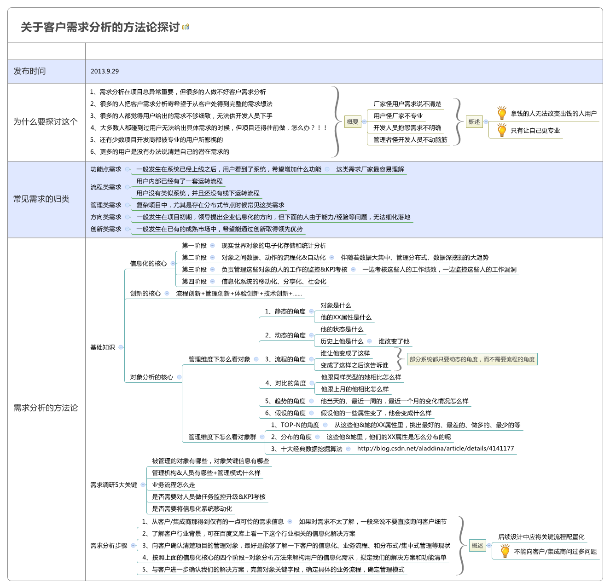

当你去做一个项目的软件需求时，一般需要考虑的内容包括： 1 系统的主要内容和界限是什么，查阅相关软件和资料书籍，了解客户的业务和专业知识（前往用户现场前准备） 1.1 制定总体计划和需求调研计划 1.2 将行程和计划通知客户，协调安排
2 与用户会面，提交本次调研活动的计划，达到的目标，时间安排，请用户配合（解释每个步骤的目的和用户参与的人员），并根据用户安排，适当调整计划
3 最好召开项目启动会议，相关业务部门和领导参与，确定双方项目组成员，确定客户方的配合人（唯一联系人）、领导（唯一协调人），介绍项目组的人员安排、总计划、需求调研计划 4 用户单位的组织机构是什么，哪些部门和人员岗位参与本系统的使用 5 使用人员对系统的目标是怎样理解的，包括一般操作人员、中层领导、决策者 6 画出系统需要完成的业务流程图，并认真检查和核对每条路径中是否完备，异常情况怎样处理（系统的动态特性） 7 依据流程图收集每个步骤需要的使用和操作的数据，确定数据的类型和范围（系统的静态特性） 8 画出业务实体及其关系，并估计业务实体的产生频率和数据量 9 评估业务流程和实体中需求变化的可能性 10 收集用户需要产生的单据和报表，与2-7步产生的结果进行检查，纠正错误、避免遗漏 11 收集用户对系统界面风格、版式、颜色的偏好和需求
12 对系统将来使用的硬件、操作系统、网络情况进行了解
12.1 收集系统初始化数据，或者要求客户进行收集和整理，明确期限时间
13 编制简单界面原型（该步骤也可放在需求分析之后完成，再次和用户进行沟通） 14 将业务需求与用户进行确认（采用会议讲解的方式），用户领导签字
